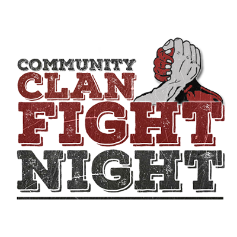

CCFN
Partecipazione alla CCFN

Il Reparto Zero prende parte alla CCFN, uno scenario europeo di Squad che coinvolge numerosi clan in eventi organizzati, coordinati e strutturati. Questo contesto rappresenta un ambiente di gioco più ampio e immersivo, pensato per favorire il confronto tra realtà diverse e valorizzare disciplina, collaborazione e capacità di adattamento.
La partecipazione alla CCFN costituisce per noi un’importante opportunità di crescita. Attraverso questi eventi possiamo mettere alla prova il nostro lavoro di squadra, migliorare la comunicazione interna e affrontare situazioni tattiche di livello superiore insieme ad altri clan europei.
Per il Reparto Zero, la CCFN non è soltanto un evento, ma un’occasione concreta per rafforzare l’identità del gruppo, consolidare l’organizzazione interna e vivere esperienze operative di qualità in un contesto competitivo e ben strutturato.
Valore dell’esperienza
Partecipare alla CCFN significa confrontarsi con altri clan, crescere come squadra e rappresentare il Reparto Zero in uno scenario europeo di alto livello.
Questo percorso ci permette di migliorare la nostra organizzazione, rafforzare la comunicazione e affrontare eventi complessi con maggiore consapevolezza e disciplina.
Obiettivi
Cosa rappresenta la CCFN per il Reparto Zero
La CCFN non è solo una partecipazione esterna, ma un’occasione per mostrare il lavoro svolto dal clan e per consolidare il nostro modo di operare in un contesto più ampio e competitivo.
Confronto
Ci misuriamo con altri clan europei in eventi organizzati e strutturati.
Crescita
Ogni evento è un’occasione per migliorare coordinazione e disciplina.
Identità
Rafforziamo la presenza del Reparto Zero all’interno della community.
Conclusione
Un’esperienza che valorizza il gruppo e il suo spirito operativo.
La partecipazione alla CCFN rappresenta per noi un passo importante nel percorso del Reparto Zero: un’occasione per crescere, confrontarci e vivere *Squad* in uno scenario europeo di grande valore.
Ritorna alla home
Puoi tornare alla pagina principale del sito per continuare la navigazione.
Torna alla Home